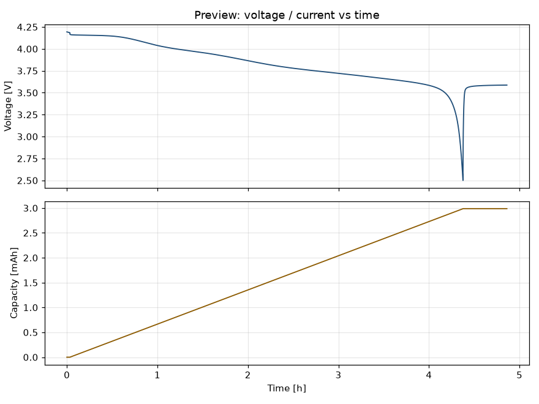

数据导入检查报告
Self-Service Data Onboarding Layer · zero-fit baseline 前置检查
1. 结论
数据导入：PASS
仿真：SIMULATION = AVAILABLE —— 可以运行
检查项：12 条（严重 0 条，警告 2 条）
有效数据行：679
本层只做“数据检查 + zero-fit baseline”。不做任何拟合、不做参数辨识。
即使仿真可用，结果也不代表模型已被验证。
2. 协议 / 倍率解释
原始数据标签 source_protocol_label = CC_Cover5（你在 experiment.protocol 填的名字，如 cycler 档位名）
平台换算出的实际倍率 effective_c_rate = 0.221 C（= max|I| / nominal_capacity）
source_protocol_label 是你在 experiment.protocol 里填写的原始档位/协议名；effective_c_rate = max|I| / nominal_capacity 是平台换算出的实际倍率。两者分开记录，勿把原始标签读成精确倍率。
3. 参数集匹配（S6）
参数集：Jackowska2025_2mAh_cm2
匹配等级：design_matched_surrogate (grade B)
结构化溯源：provenance=matched_study · electrode_design=matched_2mAh_cm2 · fitted_to_user_dataset=False · executable_reproduction=partial
是否用你的数据标定过：否（zero-fit）
说明：电极设计尺度匹配（面容量 2 mAh/cm2，参数集标定值 2 +/-0.2）。此数据源即参数集作者研究的同一电极体系（matched_study），但仍不是用你的材料/批次标定的，结果只能作为 zero-fit baseline，不能作为模型验证。
4. 你填写的实验信息
| 字段 | 取值 |
|---|
| dataset_name | demo_birmingham_cover5 |
| sample_id | NCM920305_demo |
| chemistry | NMC |
| cell_configuration | half_cell |
| working_electrode | positive |
| counter_electrode | lithium_metal |
| nominal_capacity | 0.003112 |
| active_material_loading | 2.0 |
| electrode_area | 1.72 |
| electrolyte | LiPF6 (Celgard 2325) |
| voltage_lower | 2.5 |
| voltage_upper | 4.2 |
| temperature | 25.0 |
| protocol | CC_Cover5 |
| current_sign | discharge_negative |
| initial_soc | （未填） |
5. 列映射与单位换算
| canonical 字段 | 你的原始列名 | 你填的单位 | 符号处理 |
|---|
| time | Time [s] | s | |
| current | Current [mA] | mA | 乘以 -1（原始放电为负） |
| voltage | Voltage [V] | V | |
| capacity | Capacity [mAh] | mAh | |
| temperature | Temperature [K] | K | |
电流已统一为平台约定：放电 = 正。
6. 检查明细
| 级别 | 检查项 | 说明 | 证据 |
|---|
| PASS | NAN_IN_REQUIRED | time 列没有空值 | 679/679 |
| PASS | NAN_IN_REQUIRED | current 列没有空值 | 679/679 |
| PASS | NAN_IN_REQUIRED | voltage 列没有空值 | 679/679 |
| PASS | DUPLICATE_TIMESTAMP | 没有重复时间戳 | 0 |
| PASS | NON_MONOTONIC_TIME | 时间单调递增 | 0 back steps |
| PASS | CURRENT_SIGN_CONFLICT | 电流符号与声明自洽（discharge_negative），转换后放电为正，符合平台约定 | median I during V-decline = 0.000687969 A |
| WARN | VOLTAGE_RANGE | 有 2 个点（0.3%）在声明窗口之外 | measured V range [2.5, 4.193] V |
| PASS | CURRENT_RANGE | 电流幅值在合理范围 | max|I| = 0.000687998 A（约 0.22 C，按标称容量 0.003112 Ah） |
| PASS | CAPACITY_CONSISTENCY | 容量列与电流积分一致 | dQ_col=0.00298761 Ah, integral=0.00298761 Ah, rel diff 0.0% |
| PASS | SAMPLING_INTERVAL | 采样间隔统计已记录 | median dt=3.544 s, max dt=120 s, duration=1.75e+04 s |
| WARN | SAMPLING_INTERVAL_GAP | 存在明显采样间断（最大间隔是中位数间隔的 34 倍） | median 3.544 s vs max 120 s |
| PASS | AMBIENT_TEMPERATURE | 使用你填写的环境温度 25 C | user declared |
7. 数据预览
